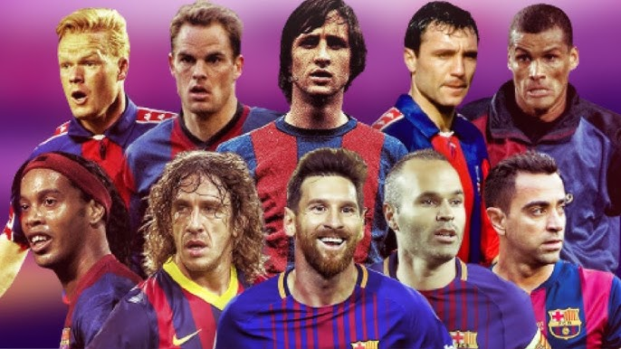

Conheça os ídolos/titulos do Futebol Clube Barcelona
A trajetória do Barcelona é marcada por uma rica história de conquistas e por ter servido de palco para algumas das maiores lendas do esporte. Coletivamente, o clube se consolidou como uma máquina de vencer títulos. No topo de sua galeria destacam-se as 5 taças da Liga dos Campeões da UEFA, além de dezenas de conquistas da La Liga e o posto de maior vencedor da história da Copa del Rey. Sob o comando de elencos históricos, como o "Dream Team" dos anos 90 e o lendário time de Pep Guardiola, o Barça alcançou feitos raros, incluindo o inédito Sextouple (seis títulos em uma única temporada) e múltiplas tríplices coroas.
Essa dinastia de troféus foi construída pelos pés de atletas imortais que moldaram a identidade do futebol arte. O maior deles, Lionel Messi, quebrou todos os recordes possíveis, tornando-se o maior artilheiro e jogador mais vitorioso da história do clube. Ao seu lado na era moderna, maestros como Xavi Hernández e Andrés Iniesta ditaram o ritmo do meio-campo, enquanto o zagueiro Carles Puyol personificou a raça e a liderança como capitão. Antes deles, a filosofia do clube foi revolucionada pelo gênio holandês Johan Cruyff, tanto como jogador quanto como treinador.
